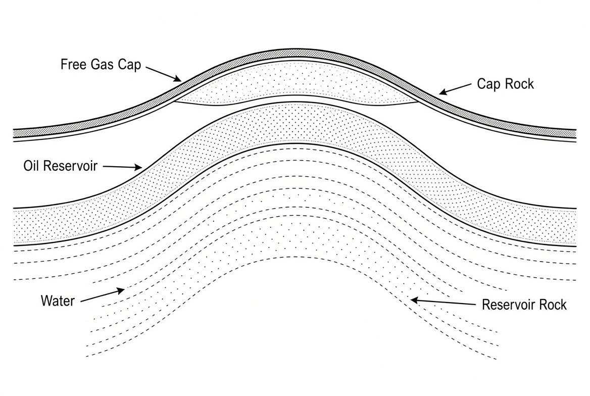
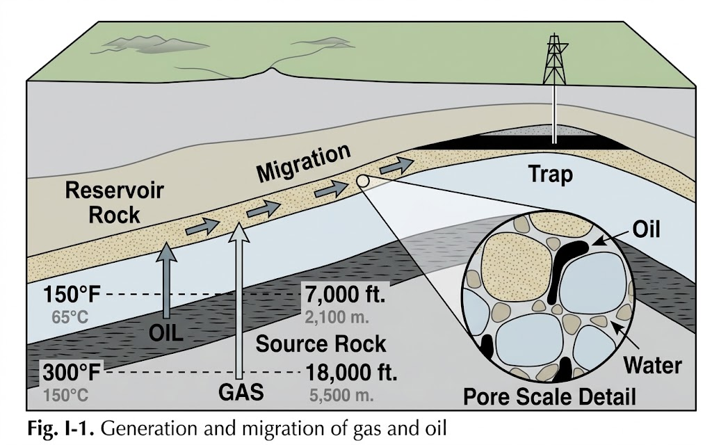
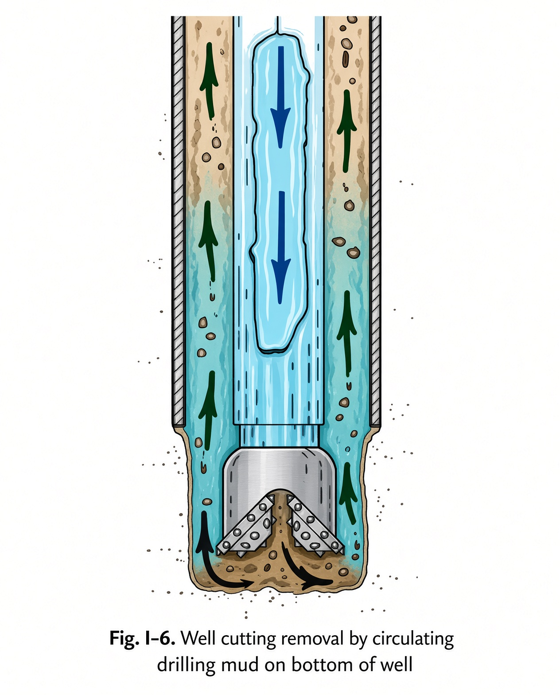
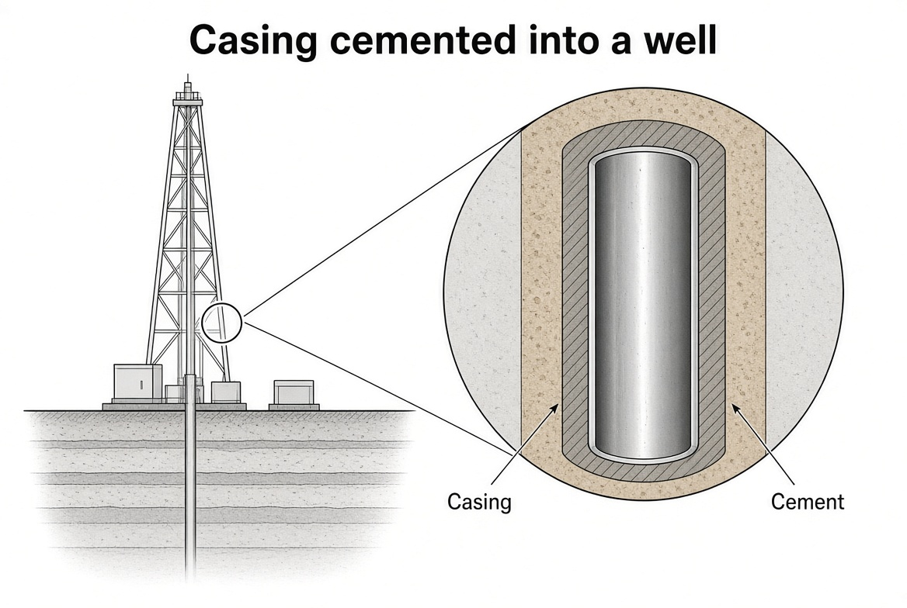

Introduction
Petroleum is not one product—it is a system. This chapter maps what companies sell, what must exist underground for a commercial field, and how drilling, logging, and production fit together. If you work with well data, these are the nouns everything else hangs on.
Learning goals
- Name the three geologic conditions required for a commercial oil or gas field.
- Explain oil vs gas generation windows in terms of temperature (and why TVD matters, not MD).
- Describe how buoyancy drives migration and how fluids stack under a seal.
- Distinguish mud log, wireline log, and what “log” means as data vs as a tool.
- Sketch the rotary circulating path and why mud can hide a reservoir until you log.
What is sold
Crude oil is the black liquid that goes to a refinery (gasoline, lubricants, and many other cuts). Natural gas is colorless and odorless; it is measured by volume (Mcf and multiples) and by heat content (Btu), and it is burned. Crudes range from heavy (viscous, harder to produce, usually less valuable) to light (flow easily, more naphtha, usually worth more).
Some gases carry condensate—a near-naphtha liquid that drops out at surface conditions and prices almost like oil. Sulfur is a problem: sour crude and gas with hydrogen sulfide (H₂S) sell for less and demand special handling.

_at_the_anchorage_of_the_Port_of_Haifa,_Israel_-_2023-07-01_(DSC5705).jpg){kind=link}

{kind=link}
The three conditions
If any one is missing, there is no field:
- Source rock that generated oil and/or gas at some time.
- Reservoir rock—a separate porous, permeable layer that can store fluid and deliver it to a well.
- Trap above that layer so commercial volumes accumulate—plus a seal (caprock). Without a seal, hydrocarbons leak to surface as seeps.

Where it lives
Hydrocarbons sit in sedimentary basins—layered sand, mud, shells, and salts. Think beach sand → sandstone; mud → shale; shells → limestone. Those are the rocks you drill.
Where hydrocarbons come from
Buried organic matter cooks with temperature and time. The most common source is black shale (organic mud from oxygen-poor seafloors). In a typical geothermal gradient:

- Oil generation begins around ~65 °C (about ~2,130 m TVD in that model).
- Oil keeps generating up to about ~150 °C (about ~5,500 m TVD).
- Hotter / deeper → thermogenic gas; remaining oil can crack to gas + graphite.
So there is an oil window and, deeper, a gas window. These are temperature ranges, not a universal “oil at X meters” law. A hot basin pushes the window shallower; a cold basin pushes it deeper. Condensate often appears when fluid leaves a hot system and liquefies at surface.
Why it rises — migration, porosity, traps
Oil and gas are lighter than formation water, so they migrate upward through fractures and, once in a reservoir layer, pore-to-pore updip. They can end far—vertically and on the map—from where they were generated. Ease of flow is permeability; void space is porosity (often ~10–30% in good reservoirs).
A trap is a high point (anticline, dome, or other geometry) where migration stops. Fluids separate by density: free gas cap on top, oil in the middle, water below—held by impermeable caprock (typically shale or salt).
Finding and drilling
Exploration uses outcrops projected to the subsurface, well-to-well correlation, structure and isopach maps, and especially seismic (surface energy reflects from layers so you can see trap shape). Only a wildcat proves commercial hydrocarbons—and many wildcats are dry holes.

Rotary drilling: a drillstring (pipe + bit) rotates and cuts. Roughly every ~9 m (30 ft) you add a joint. The mast/derrick raises and lowers the string. Mud (usually bentonite clay + water) goes down inside the pipe, out bit nozzles, and up the annulus: it lifts cuttings, supports the hole, and its weight keeps formation fluids out. If fluids reach the floor you risk fire or blowout; if water invades badly, the hole can collapse. Wells may be vertical, directional, or horizontal—horizontals often produce more because they contact more reservoir.
Mud’s overbalance also hides the reservoir: you can drill through oil or gas and see nothing at surface. That is why you log afterward (or while drilling).
Logs, completion, surface
A well log is a record—curves or a report of rock type, porosity, and fluids vs depth—not the tool itself. Types include mud log, lithologic/sample log, wireline, and MWD/LWD.
- Mud log: built while drilling from mud and cuttings (gas, oil stain, lithology). Not on wireline.
- Wireline log: after drilling (or on a trip), a truck runs a logging tool on cable measuring electrical, acoustic, or nuclear properties—clean curves vs depth.
Completion: run casing, cement the annulus (cement job), often in stages (casing program: drill, case, deepen, smaller casing). Produce via open hole (casing to top of pay, open below) or perforated casing (shots through casing into the reservoir). Production fluid usually rises in slim tubing; a packer seals the tubing–casing annulus.

Surface facilities and life of a field
If the well flows (gas, or oil early on), valves sit on a Christmas tree. Most oil wells need artificial lift—classically a sucker-rod / beam pump (“horsehead”). Gas is treated (water, corrosives, valuable liquids) then sold to pipeline. Oil goes through a separator (gas off, brine down) into stock tanks.
Acid can dissolve near-wellbore rock damage; frac pumps fluid until the rock cracks and leaves proppant so the fracture stays open. In shale, matrix permeability is essentially zero—horizontal wells plus slickwater frac make production possible.
Pressure falls over time along a decline curve. Rough recoveries often cited: ~80% of gas in place vs ~35% average for oil (wide range). Remaining oil may need waterflood or EOR (CO₂, N₂, steam). End of life: plug and abandon—cement to seal reservoirs and protect aquifers, welded plate, soil on top.
Key terms
- Source rock
- Rock that can generate oil/gas from organic matter (often black shale).
- Reservoir rock
- Porous and permeable rock that stores and transmits hydrocarbons.
- Trap / caprock
- Geometry that accumulates HC; impermeable seal that prevents leakage.
- Oil / gas window
- Temperature ranges for oil vs thermogenic gas generation.
- Porosity / permeability
- Void fraction vs ease of flow (pore throats matter).
- Wildcat
- Exploratory well seeking a new reservoir; many are dry.
- Well log
- A depth-indexed record of rock/fluid properties—not the tool itself.